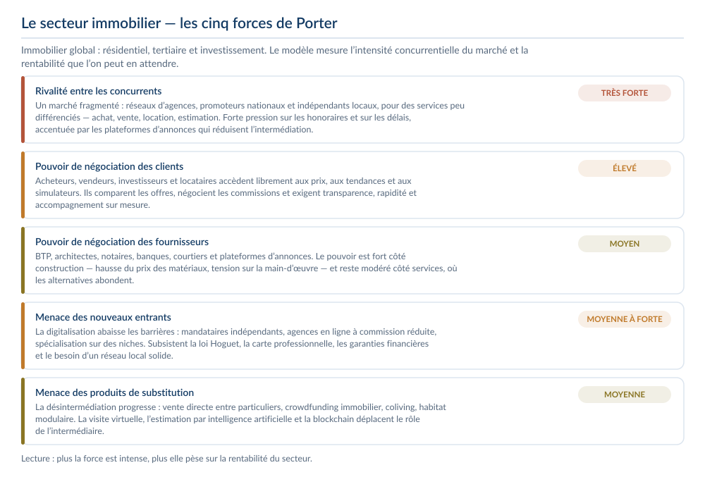
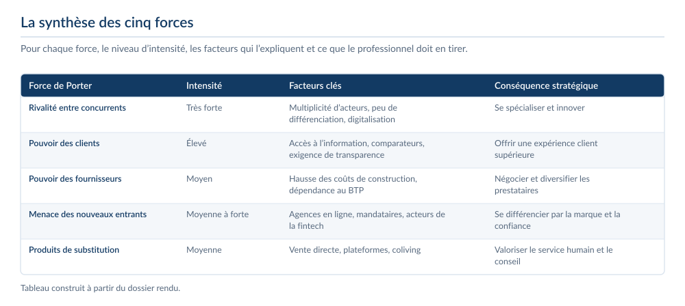
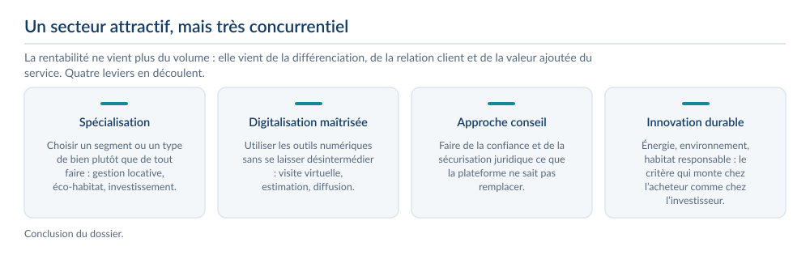
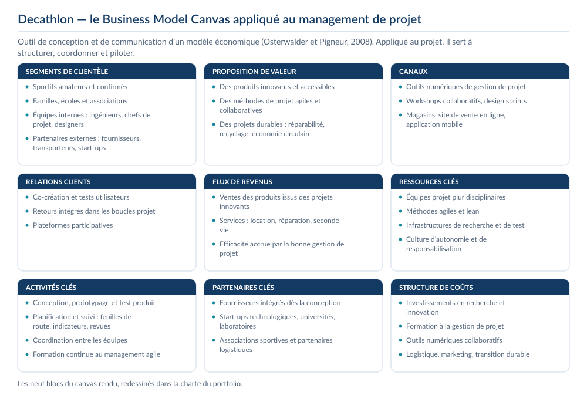
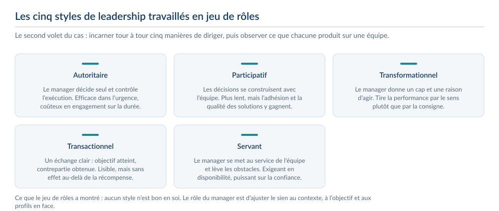
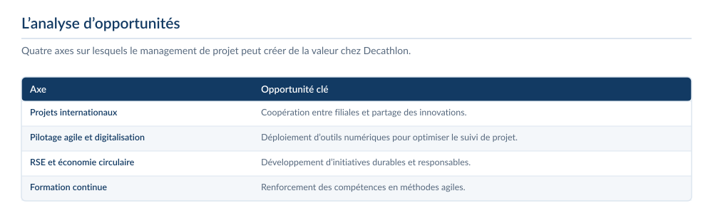
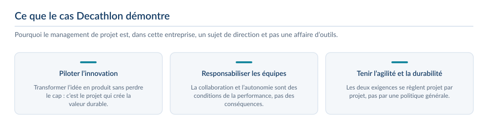

4entreprises étudiées
45 %de taux de transformation visé chez IKEA
3objectifs SMART définis
36mois de feuille de route
Le contexte et la commande
- SAE S5.02 : comprendre comment un manager organise, encadre et pilote efficacement une équipe, à travers quatre cas d’entreprise distincts.
- Quatre terrains différents : le secteur immobilier, Decathlon, IKEA et Maison Le Minor.
- Chaque cas appelle un angle propre — environnement concurrentiel, modèle économique et leadership, redressement de performance, développement international.
La problématique
Comment un manager organise, encadre et pilote efficacement une équipe, à travers quatre contextes organisationnels différents ?
Le cadre de la SAÉ
- Quatre études de cas menées en groupe sur un même fil : comment un manager organise, encadre et pilote une équipe selon le contexte dans lequel il se trouve.
- Quatre terrains volontairement éloignés les uns des autres — un secteur entier, un modèle économique, un point de vente en difficulté, une manufacture qui cherche à s’exporter — pour éprouver les mêmes outils sur des situations qui n’ont rien à voir.
- Chaque cas a donné lieu à un dossier ou à une soutenance : les documents qui suivent sont ceux qui ont été rendus, regroupés cas par cas.
1 — Le secteur immobilier
- Analyse de l’environnement concurrentiel par les cinq forces de Porter, sur l’immobilier pris au sens large : résidentiel, tertiaire et investissement.
- Une rivalité très forte entre des acteurs nombreux et peu différenciés, et un pouvoir de négociation élevé des clients, qui accèdent librement aux prix, aux tendances et aux simulateurs.
- Des fournisseurs au pouvoir moyen — fort côté construction, modéré côté services — et des barrières à l’entrée que la digitalisation abaisse sans les supprimer : loi Hoguet, carte professionnelle, garanties financières.
- Conclusion : la rentabilité ne vient plus du volume mais de quatre leviers — spécialisation, digitalisation maîtrisée, approche conseil et innovation durable.



2 — Decathlon
- Business Model Canvas construit de bout en bout et orienté management de projet : les neuf blocs, des segments de clientèle à la structure de coûts.
- Ce que le canvas met en évidence : des équipes projet pluridisciplinaires, des méthodes agiles et lean, une co-création assumée avec les utilisateurs et des revenus qui viennent autant des services — location, réparation, seconde vie — que du produit lui-même.
- Jeu de rôles sur cinq styles de leadership : autoritaire, participatif, transformationnel, transactionnel et servant. Aucun n’est bon en soi ; le rôle du manager est d’ajuster le sien au contexte, à l’objectif et aux profils en face.
- Analyse d’opportunités sur quatre axes : projets internationaux, pilotage agile et digitalisation, RSE et économie circulaire, formation continue.




3 — IKEA
- Un point d’accueil affichait 36 % de taux de transformation contre 45 % habituellement, pour une baisse globale des ventes de 20 %.
- Diagnostic en quatre facteurs : script respecté à 68 % seulement, cinq minutes d’attente moyenne contre trois attendues, organisation défaillante avec six clients supplémentaires par heure et par collaborateur, et des conseils moins précis qui pèsent sur le panier moyen.
- Objectifs SMART chiffrés et étagés : 40 % de transformation en semaine 6, 45 % en semaine 12, trois minutes d’attente en quatre semaines, 90 % de conformité au discours en six semaines et 89 % de satisfaction en huit.
- Plan d’actions en trois priorités : réorganiser l’accueil — renforts aux heures de pointe, polyvalents mobilisables, file rapide —, renforcer le management quotidien par des briefs et des retours hebdomadaires, et former les équipes par du coaching terrain et des mises en situation.


4 — Maison Le Minor
- Développement international d’une manufacture textile bretonne créée en 1936 : tissage, tricotage et confection, 45 artisans, un positionnement premium « Made in France » — et un export sous les 5 % du chiffre d’affaires.
- Diagnostic SWOT : une image et un patrimoine forts, une production intégrée et une capacité B2B, face à un e-commerce international peu développé, à la concurrence scandinave et à la pression de la fast-fashion.
- Grille de sélection en cinq critères — pouvoir d’achat, sensibilité au Made in France, tendance du style marin, maturité du e-commerce, faiblesse des barrières à l’entrée — qui conduit à quatre marchés : Allemagne, Japon, côte Est des États-Unis et pays scandinaves.
- Stratégie d’entrée sur quatre fronts : e-commerce international, distribution multimarques premium, capsules et collaborations, B2B international. Objectif chiffré : 8 % du chiffre d’affaires à l’international en année 1, 18 % en année 2, 30 % en année 3.


Ce que j’en retire
- Encadrer une équipe ne consiste pas à appliquer une méthode : c’est lire une situation, choisir un style et tenir des objectifs mesurables.
- Le cas IKEA m’a appris à transformer un constat chiffré en plan d’action daté, ce que j’ai refait ensuite en stage sur le suivi d’un pipeline de candidats.
- Les quatre cas partagent la même exigence : un diagnostic argumenté avant toute recommandation, et des indicateurs pour savoir si la recommandation a produit un effet.
Ce que j’ai produit
- Immobilier : analyse de l’environnement concurrentiel et des forces qui structurent le marché.
- Decathlon : Business Model Canvas appliqué au management de projet et analyse d’opportunités — international, pilotage agile, RSE et économie circulaire, formation continue.
- IKEA : diagnostic en quatre facteurs d’une baisse de performance, trois objectifs SMART et un plan d’actions en trois priorités, avec une feuille de route chiffrée à douze semaines.
- Maison Le Minor : diagnostic stratégique, cinq critères de sélection des marchés, quatre marchés cibles retenus, modes d’entrée, stratégie de branding et KPI sur trois ans.
Ce que j’en retire
- Le style de management se choisit selon le contexte, les objectifs et les profils en présence.
- Un plan d’actions n’a de valeur que s’il est assorti d’objectifs mesurables et de délais.
- Comparer quatre entreprises apprend à transposer une méthode d’un secteur à un autre.
Outils et méthodes mobilisés
Business Model CanvasObjectifs SMARTKPIDiagnostic de performanceStyles de leadership